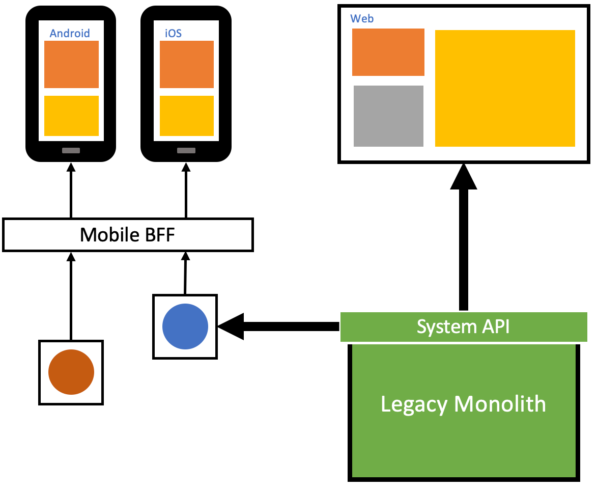

Backend for Frontend(BFF)

The backend for frontend is an architectural pattern in which different back-end services are tailored to specific user interfaces or client applications. It helps optimize the data and functionality provided to different front-end clients.
Benefits
- Tailored User Experience: BFF allows you to create custom backend services optimized for each frontend application or platform. This tailoring results in a better user experience, as the backend can deliver data and functionality that exactly match the needs of a particular front-end client.
- Improved Performance: BFF services can be optimized for performance, minimizing the amount of data transferred over the network and ensuring that frontend applications receive only the data they require. This reduces latency and improves responsiveness.
- Efficient Development: BFF promotes more efficient development cycles. Backend teams can work in parallel with frontend teams, focusing on their specific client requirements, which can accelerate the development process.
Tangible Things to Do for Adoption
- Identify Frontend Applications:
- Identify and understand the various frontend applications or user interfaces that will benefit from the BFF pattern. These could include web applications, mobile apps, or other client types.
- Analyze Frontend Requirements:
- Analyze the specific requirements and needs of each frontend application. Understand the data, functionality, and performance requirements for each frontend.
- Create BFF Services:
- Develop separate backend services, each tailored to serve a specific frontend. These BFF services should encapsulate the data and functionality needed by the associated frontend.